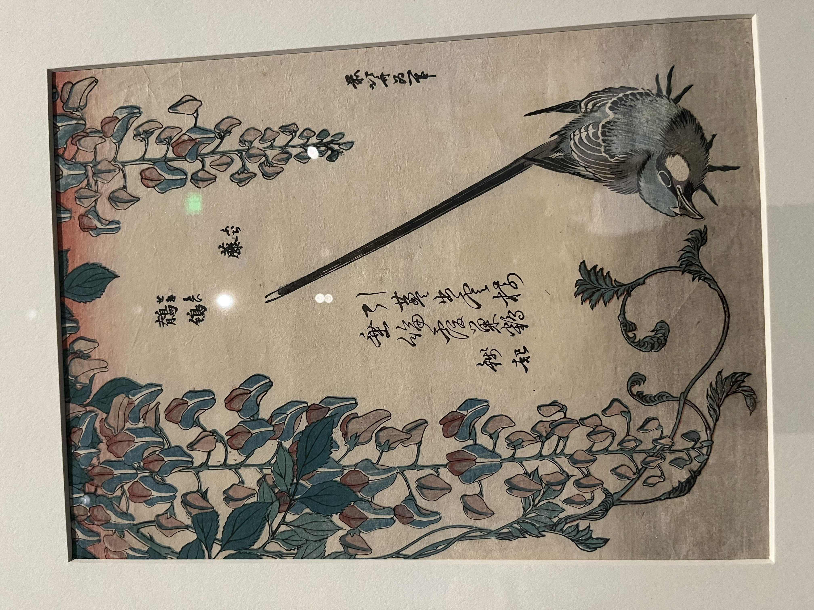
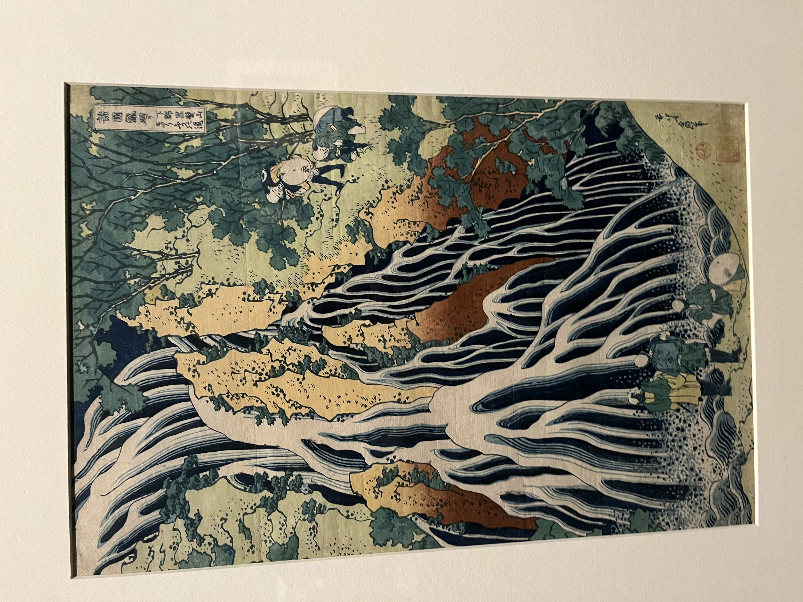
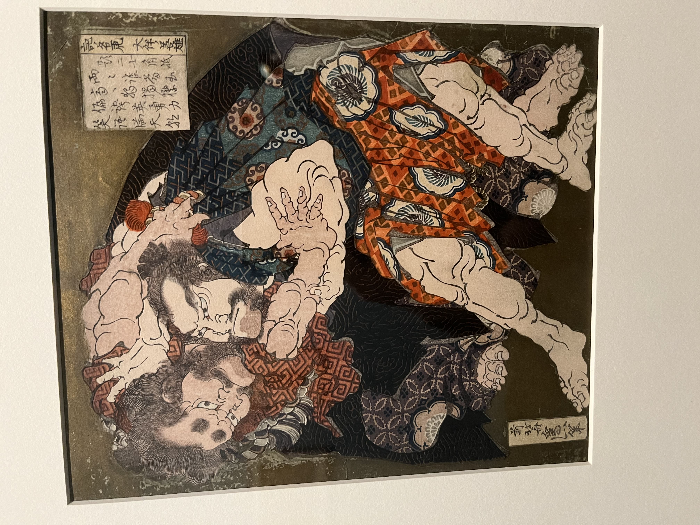
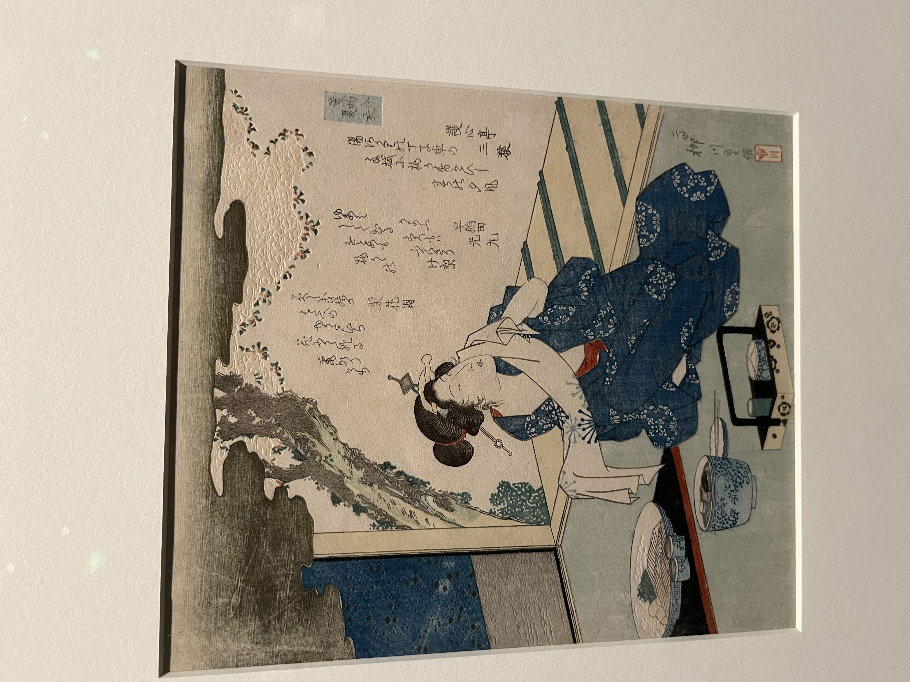

久闻葛饰北斋（Katsushika Hokusai），甚至在文明中也必定看到他的身影。《神奈川从浪里》和《凯风快晴》是其标志性的作品，更是色彩和大浪的杰作。之前在MET买了他的纪念书签，可惜没看到真迹，最近MFA有他的个展，昨天prospectus答辩完，今天立马兴冲冲跑去，大饱眼福。
谁能想到我第二次带A7R5去拍，想着50 1.2 大展身手，居然忘记带储存卡了！这是一般的憨憨能干出来的事吗？还得是我啊！

北斋的风景画就不多说了，颇多作品是木版画，经由出版商上色后出版。详略得当，虽然有的时候客体太小难以察觉；笔触细腻，贴近一看大感纤细之巧；颜色多为普鲁士蓝，很少多色的艳丽，更多的是一个色调的层次变化；透视虽然不太正确但会有点睛之意，比如富士三十六景中的富士山…
人物画也很有意思，但是我用的是没有sim卡的相机记录的…所以现在就剩一张学生的画。人物很写实，身体多弯曲佝偻，面部饱满喜白，长发披肩或发髻，有一点唐代仕女图风韵。

Prussian blue (Berlin blue in Japanese) was more resistant to fading than earlier blues, allowing printed sky and sea colors to retain their hues. Ten prints in Hokusai’s Thirty-six Views of Mount Fuji, colored almost entirely in tones of blue, are thought to be the first designs published in the series.
Here, a thatched-roof cargo boat is moored by the shore of Lake Kasumigaura while the crew prepares a meal. One man pours out the excess water after washing rice. Two snowy egrets, surprised by the sound of the falling water, fly up and away to the left.

The simple silhouette of Fuji is a symbol of permanence, in contrast to the temporary chaos caused by the wind. A man’s hat and a woman’s packet of tissue paper are blown far away, while two other men hold tightly to their own hats. After the Great Wave and Red Fuji, this print is one of the best known in the series.

A cormorant fisherman holds the long leashes of his trained birds, who have dived under the waves to catch fish that will be stored in the basket tended by his little son. The setting is probably the rapids where two swift but smaller rivers flow together to form the Fuji river. The first printings of this design were entirely in shades of blue, with red used only for the censor’s seal and publisher’s trademark in the lower right corner.
This slightly later printing uses green in addition to the blues, and more colors were added in still later printings.
It’s thought that Hokusai and his publisher may have intended to do the whole Fuji series exclusively in shades of blue but changed their minds after the first rush of enthusiasm for the beautiful new Prussian Blue colorant subsided, and it became just another color in the printmaker’s palette, albeit a very important one.

In the 19th century, Edo contained rivers and canals, with many bridges often featured in cityscape prints. Ukiyo-e artists frequently showed the bridges from a water level viewpoint, looking up at the underside of a bridge as if from an approaching boat.
The upturned tail of the Japanese wagtail contrasts amusingly with drooping wisteria blossoms. The Chinese couplet, describing another interaction between vines and birds, is by Tang dynasty poet Oian Oi
The Kirifuri (“Falling Mist) Waterfall is one of the three most famous waterfalls in the vicinity of Nikkö.
The most important sumo （相扑） match in Japan’s history took place in the 9th century. Emperor Montoku announced that his successor would be decided by a bout between warriors representing his two sons. Surprisingly, the underdog Yoshio won the match, and the younger prince became Emperor Seiwa.
Surimono prints had always included warrior images, but the theme became more popular after the success of Kuniyoshi’s Water Margin series. Hokusai emphasizes the might of the wrestlers by filling the picture with their powerful bodies, a technique Kuniyoshi also used. It’s unclear who originated the idea.

This print is perhaps the most successful of Hokusai’s early perspective prints (uki-e). It combines the illusionistic effect of vanishing point perspective with bizarre monsters drawn as if they were real-like a horror movie with phenomenal special effects. The title refers to a popular Edo-period pastime where a group of people took turns telling ghost stories at night, putting out lights one by one as each story ended. When all the tales were told and their respective lights extinguished, ghosts would supposedly appear. In Hokusai’s print, well-dressed men on the veranda of an elegant mansion may have been playing the game, not realizing what creatures they would summon.
一些其他画家作品：
In Japan, the most beloved Chinese poet was Bai Juyi (772-846). His narrative poem, The Song of Everlasting Sorrow, details the great love of Tang emperor Xuanzong for his concubine Yang Guifei.
Years after her death, a Daoist adept searches the spirit world for her on behalf of the emperor. At last, in a heavenly palace, he encounters her spirit and returns with a message of her eternal love for the emperor. In this surimono, the poem’s heavenly palace is combined with the legend of the Moon Palace, where the Jade Rabbit in the background resides -an appropriate theme for a Year of the Rabbit.

In one of the most humorous scenes in Hiroshige’s hit series, travelers brave a high wind to cross the bridge over the Mie River just outside of Yokkaichi. The town is located beside Ise Bay- masts of fishing boats can be seen in the distance. A traveler holds his raincoat around him with one hand while leaning on his walking stick with the other. A less cautious pedestrian chases his hat, which has blown off and is rolling away. The tree branches, as well as the travelers’ garments, clearly indicate wind blowing across the picture. Hiroshige may have been thinking of Hokusai’s print, Ejiri in Suruga Province, hanging nearby, and of pages in the Hokusai Sketchbooks that show travelers coping with sudden gusts of wind.